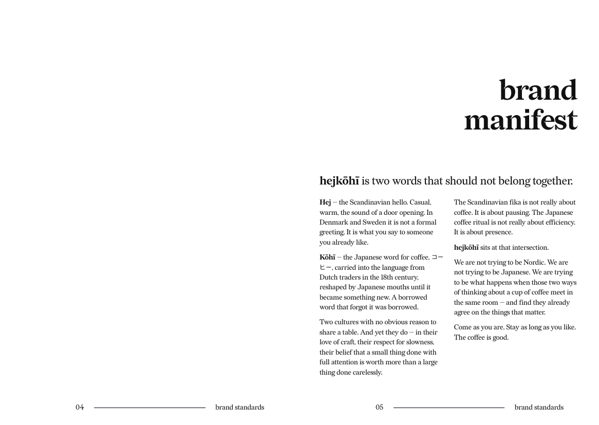
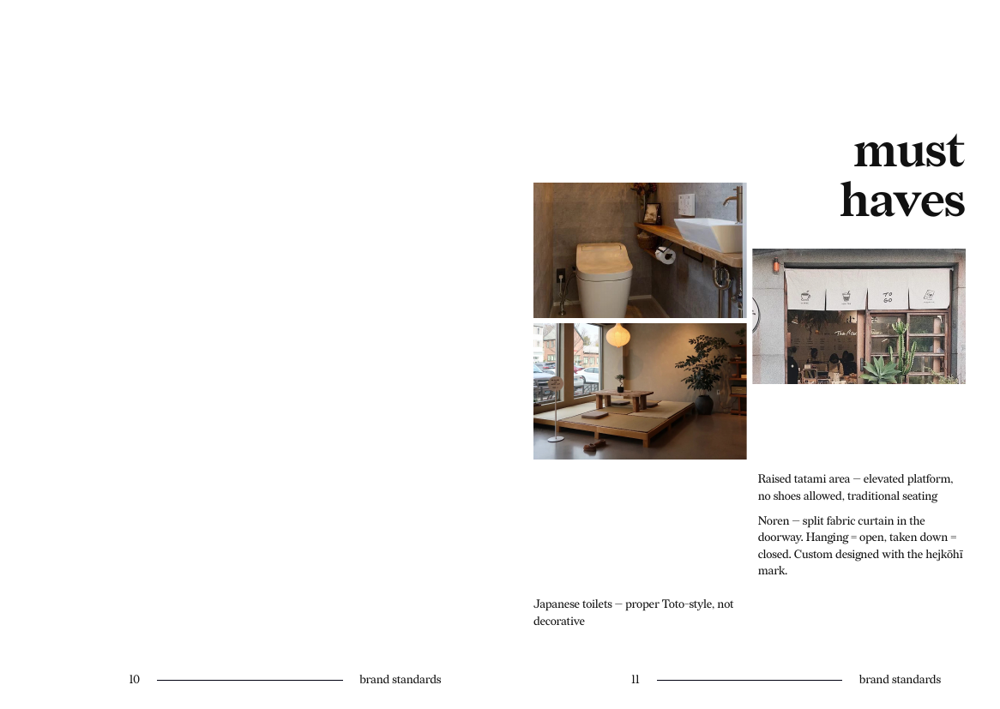

Strong memory cues
Hand-carved logo work, tatami seating, noren entry, and a restrained material palette create details people remember and talk about.
Scandinavian calm. Japanese presence. Specialty coffee.
This site turns the early brand work into a partner-ready concept memo: what the brand stands for, how the guest experience works, why the market is attractive, and what a first-location plan could look like.
01
"We are not trying to be Nordic. We are not trying to be Japanese. We are trying to be what happens when those two ways of thinking about a cup of coffee meet in the same room."
The brand manifesto already establishes the core idea well: a meeting point between Scandinavian hospitality and Japanese ritual. The commercial opportunity is to turn that into a hospitality experience that feels calm, crafted, and recognizably different from generic third-wave coffee shops.
hejkohi is positioned as a premium everyday place. Not a destination restaurant, not a hurried grab-and-go kiosk, and not a lifestyle set. It aims to become the neighborhood's reliable "I can stay here" room.

02
Hand-carved logo work, tatami seating, noren entry, and a restrained material palette create details people remember and talk about.
Coffee, tea, and a concise food offer keep the operation easier to train, easier to buy for, and easier to maintain consistently.
The concept works for morning regulars, remote workers, fika-style afternoon breaks, and slow weekend visits without needing multiple identities.
The first site can establish a replicable playbook across spatial cues, service rituals, menu mix, and visual language.
03

The first impression matters here: a visible noren at the entrance, honest materials, a small ritual around the bar, and seating that invites slowing down. The design should feel edited rather than themed.
Warm, quiet, and observant. Hospitality is conversational, not performative. Orders move efficiently, but nothing should feel rushed.
Small core menu, high product confidence, and room for seasonal specials without operational bloat. Water remains free as a values cue.
04
The mood board points in the right direction: tactile stamp marks, natural woods, clean facades, soft lighting, and a feeling of composure. The brand works best when it stays materially honest and avoids decorative "fusion" signals.
That clarity matters commercially too. A coherent visual identity improves recall, makes launch content stronger, and supports a premium price position without requiring a large menu or large footprint.
05
Nearby residents and freelancers who want a dependable morning or midday ritual and care about quality, atmosphere, and familiarity.
Guests drawn to spaces with character who actively share places that feel specific, photogenic, and culturally interesting.
Pairs and small groups looking for a place to sit longer than a quick coffee stop, especially in afternoons and weekends.
The opportunity is not to out-volume chain coffee. It is to win a profitable niche between commodity cafes and precious specialty bars: a place with better emotional memory, better dwell quality, and enough operational discipline to scale beyond one room.
06
07
Working assumptions for partner discussions
Balanced first-location assumptions for a walkable urban neighborhood.
08
Secure founding partner alignment, shortlist neighborhoods, negotiate lease, finalize funding structure.
Translate the brand book into full interior, signage, packaging, menu system, and service blueprint.
Train team, refine recipes and workflows, seed community with tastings, creators, and local partnerships.
Measure retention, dwell patterns, and menu mix; document what becomes the repeatable playbook.
09
A sensible next step is a partner conversation around capital structure, target city, and the first flagship budget range. This site is designed to support that conversation, not replace a full financial model.
10
This website draws from the updated Affinity-exported brand guide and the earlier PDF version you placed in the repo.